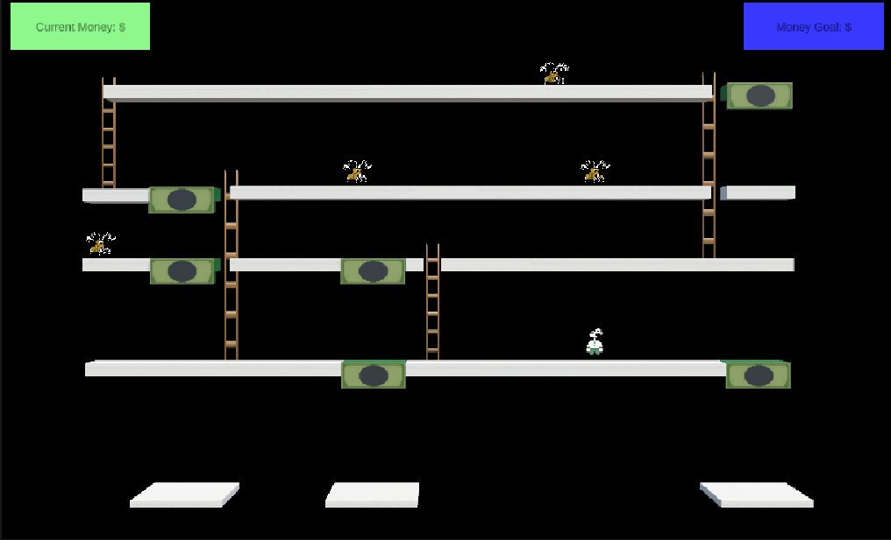
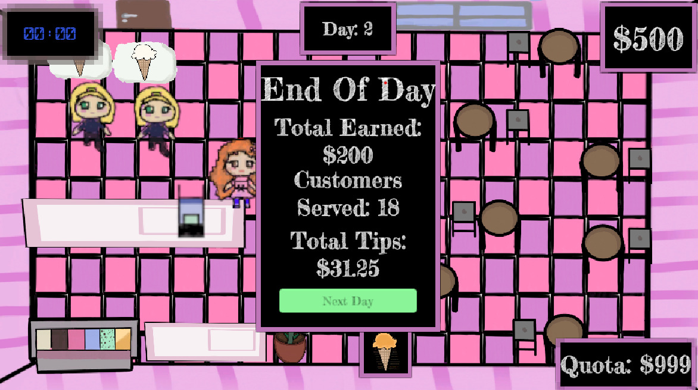

Bankrupt
Bankrupt is a transformational educational game designed to teach the value of money through an engaging maze-based challenge. Players must navigate through a series of levels by stepping on tiles representing exact monetary amounts. Correct decisions allow progress to the next level, while missteps result in restarting the challenge. Built to reinforce practical money management and arithmetic skills in a fun, interactive format, Bankrupt helps players improve their financial literacy and decision-making under pressure.
Sweet Scoops
Sweet Scoops simulates a fast-paced work environment where players take on the role of an ice cream server in a bustling shop. The objective is to match customer orders accurately before time runs out, meeting a daily sales quota to progress. Each customer is timed, creating a sense of urgency and encouraging players to practice prioritization, multitasking, and attention to detail. The game is designed to develop essential job readiness skills such as task management and efficiency, offering players a fun and practical introduction to workplace expectations.